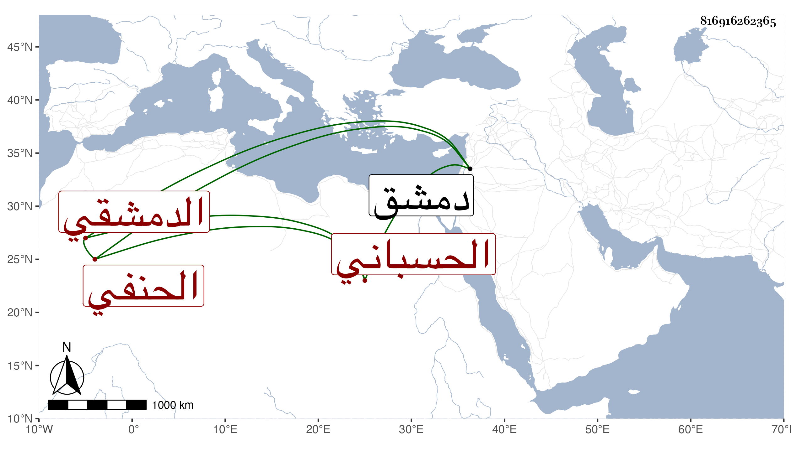

0902Sakhawi.DawLamic.ITO20230111-ara1.EIS1600.816916262365
Biography ID: 816916262365
736
محمد بن عبد الرحمن بن أحمد بن محمد الأمين بن الزين الحسباني الأصل الدمشقي الحنفي الماضي أبوه . استقر في كتابة السر بدمشق في شوال سنة إحدى وتسعين بعد صرف الموفق الشريف الحموي ببذل كثير ثم صرف في جمادى الآخرة من التي تليها بابن اخي الشهاب بن الفرفور واستمر مخمولا في عهدة الديون وعاد ضرره على زوجته التي كانت زوجا للشيخ خطاب . مات في الطاعون سنة سبع وتسعين .
